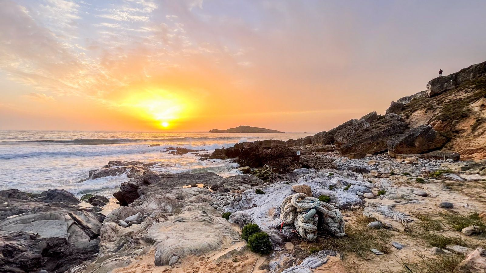
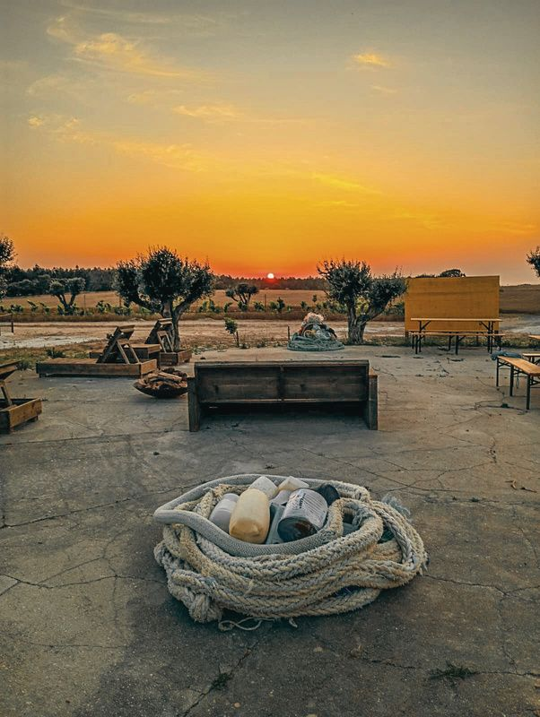
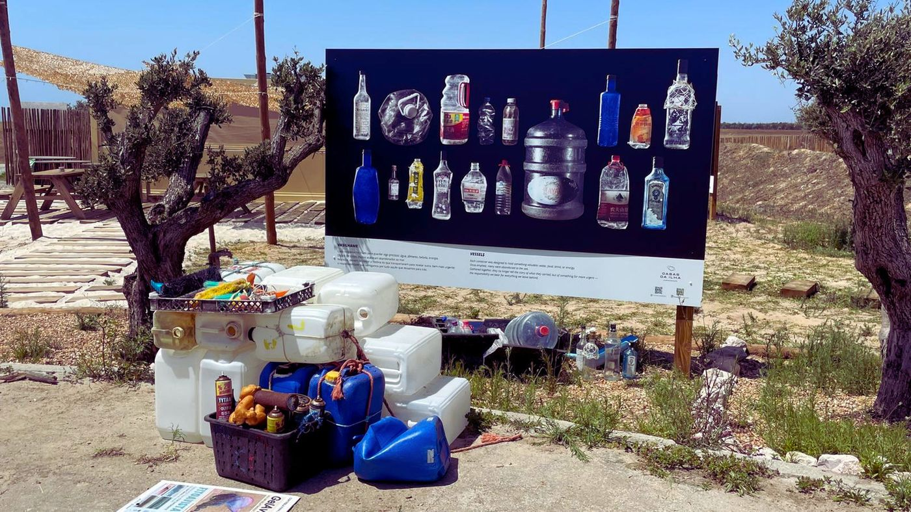
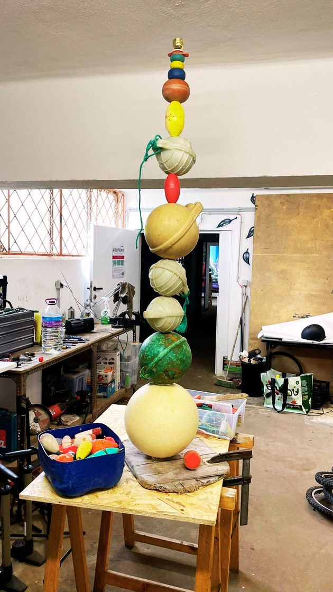
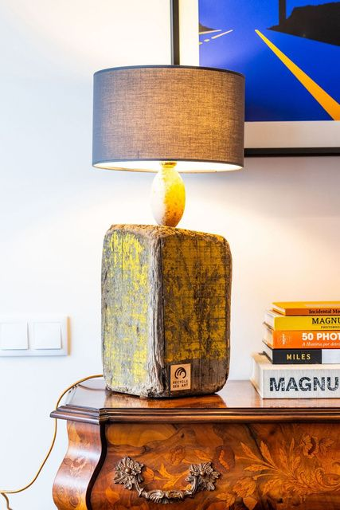
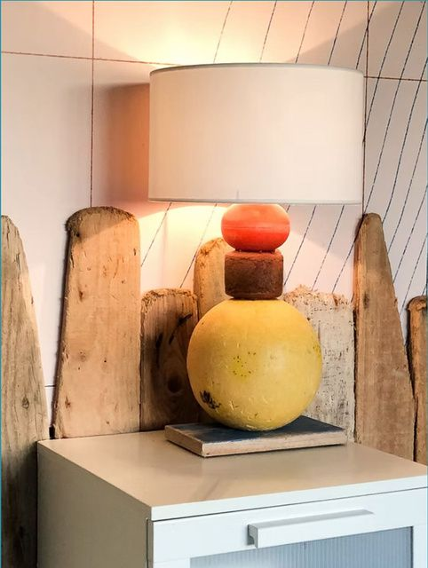
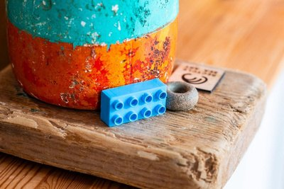
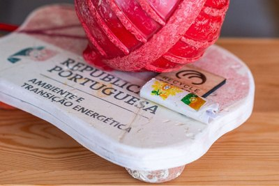

Casas da Ilha · Porto Covo · Fonte MouroCasas da Ilha · Porto Covo · Fonte Mouro
Parque Cultural e Regenerativo de Porto CovoPorto Covo Cultural and Regenerative Park

Exposição de fotografia · Nuno AntunesPhotography exhibition · Nuno Antunes
WASTE 2 ARTE
Amazing Recycling Territory Experience
Integrada na programação paralela do Festival Músicas do Mundo e com o apoio da Câmara Municipal de Sines, a Waste 2 Arte inaugura o primeiro projeto do Parque Cultural e Regenerativo das Casas da Ilha.
O espaço nasce com a missão de promover, de forma acessível, criativa e inspiradora, os valores ambientais, culturais e paisagísticos do Parque Natural do Sudoeste Alentejano e Costa Vicentina, sensibilizando visitantes e comunidade para a preservação do território através da arte, da educação ambiental e da sustentabilidade.
Uma exposição que propõe uma reflexão sobre a relação entre o Homem e o Oceano, entre o Homem e o Planeta, e mostra como a criatividade pode valorizar materiais recolhidos no ambiente e estimular comportamentos mais responsáveis.
São 18 obras de fine art photography do fotógrafo e recoletor Nuno Antunes, resultado de vários anos de observação da costa alentejana e de ações de plogging nas praias do concelho de Sines.
Cada fotografia convida a olhar duas vezes: primeiro vemos um objeto abandonado; depois descobrimos uma memória, um fragmento da nossa relação com o oceano e com o planeta. Aquilo que descartamos nunca desaparece, apenas muda de lugar.
Porque o mar transforma.
A arte revela.
E nós escolhemos o futuro.
Part of the parallel programme of the Músicas do Mundo Festival and supported by Sines City Council, Waste 2 Arte opens the first project of the Casas da Ilha Cultural and Regenerative Park.
The space was created to promote, in an accessible, creative and inspiring way, the environmental, cultural and landscape values of the Southwest Alentejo and Vicentine Coast Natural Park, raising awareness among visitors and the local community of the importance of preserving the territory through art, environmental education and sustainability.
The exhibition invites reflection on the relationship between humanity and the ocean, and between humanity and the planet, showing how creativity can add value to materials collected from the environment and encourage more responsible behaviour.
It brings together 18 fine art photographs by photographer and beachcomber Nuno Antunes, the result of years observing the Alentejo coast and plogging on the beaches of the Sines municipality.
Each photograph asks us to look twice: first we see an abandoned object; then we find a memory, a fragment of our relationship with the ocean and the planet. What we discard never disappears; it only changes place.
For the sea transforms.
Art reveals.
And we choose the future.
Como nasce a Waste 2 ArteHow Waste 2 Arte comes to be
Do mar à arteFrom sea to art
- 01
O mar devolveThe sea returns
Bolas, boias, cordas, isqueiros, chinelos: o que se perde no oceano acaba por voltar à costa.
Balls, buoys, ropes, lighters, flip-flops: what is lost at sea finds its way back to the shore.
- 02
RecolhaCollection
Ações de plogging nas praias do concelho de Sines, ao longo de vários anos.
Years of plogging on the beaches of the Sines municipality.
- 03
ComposiçãoComposition
Os objetos são separados e organizados por forma, cor e história.
Objects are sorted and arranged by shape, colour and story.
- 04
ArteArt
Fotografia de autor e peças únicas do Atelier, expostas ao ar livre no Parque.
Fine art photography and one-off Atelier pieces, shown outdoors in the Park.
A exposição em númerosThe exhibition in numbers
Balanço dos primeiros 90 dias da exposição, outubro de 2026.First 90 days of the exhibition, October 2026.

O ParqueThe Park
Arte, natureza e territórioArt, nature and territory
O Parque Cultural e Regenerativo das Casas da Ilha nasceu para valorizar o património natural, cultural e paisagístico da Costa Alentejana, num espaço onde a arte, a educação ambiental, a natureza e o lazer convivem.
Fica nas Casas da Ilha, em Fonte Mouro, Porto Covo: uma propriedade de cerca de 30 hectares no coração do Parque Natural do Sudoeste Alentejano e Costa Vicentina: lagoas naturais, vinhas, oliveiras centenárias, jardins mediterrânicos e extensas áreas verdes. Fica a poucos minutos da Ilha do Pessegueiro e de algumas das mais belas praias da costa portuguesa.
Ao longo do ano, o Parque acolhe exposições de arte, instalações ao ar livre, workshops, ateliers, atividades para crianças e famílias, ações de sensibilização ambiental, eventos culturais e experiências gastronómicas inspiradas na tradição alentejana.
The Casas da Ilha Cultural and Regenerative Park was created to celebrate the natural, cultural and landscape heritage of the Alentejo coast, in a place where art, environmental education, nature and leisure meet.
It is set at Casas da Ilha, in Fonte Mouro, Porto Covo: a property of around 30 hectares in the heart of the Southwest Alentejo and Vicentine Coast Natural Park: natural ponds, vineyards, century-old olive trees, Mediterranean gardens and wide green areas. Pessegueiro Island and some of the finest beaches on the Portuguese coast are a few minutes away.
Throughout the year the Park hosts art exhibitions, outdoor installations, workshops, ateliers, activities for children and families, environmental awareness actions, cultural events and food experiences rooted in Alentejo tradition.
MissãoMission
A cultura como força de transformaçãoCulture as a force for change
É um espaço de encontro, aprendizagem e inspiração, onde cada visitante é convidado a descobrir o território de forma consciente e participativa. Através de exposições, oficinas, atividades ao ar livre e momentos de convívio, promove-se uma ligação mais profunda entre as pessoas e a paisagem.
A missão do Parque é sensibilizar para a preservação do ambiente, celebrar a identidade local e demonstrar que a cultura pode transformar o território, promovendo a biodiversidade, a economia circular e uma relação mais responsável entre o Homem e a Natureza.
It is a place to meet, learn and be inspired, where every visitor is invited to discover the territory in a conscious, participatory way. Through exhibitions, workshops, outdoor activities and shared moments, it builds a deeper bond between people and the landscape.
The Park's mission is to raise awareness of environmental preservation, celebrate local identity and show that culture can transform a territory, supporting biodiversity, the circular economy and a more responsible relationship between people and nature.


O artistaThe artist
Nuno Antunes
Fotógrafo, recoletor e observador atento da paisagem costeira. Há vários anos percorre as praias da costa alentejana em ações de plogging, recolhendo objetos que o mar devolve à terra.
Na sua obra, esses vestígios deixam de ser resíduos para se tornarem elementos de uma nova narrativa visual. Através da fotografia de autor e da composição, revela a beleza inesperada do que foi descartado e convida a questionar os conceitos de desperdício, valor e responsabilidade ambiental.
As imagens de Waste 2 Arte não documentam apenas uma realidade; reinterpretam-na. Cada fotografia é um exercício de contemplação e reflexão, onde a estética se alia à sustentabilidade.
O seu trabalho mostra que aquilo que o mar devolve pode voltar a inspirar, emocionando o olhar e despertando uma nova consciência sobre o território que partilhamos.
Photographer, beachcomber and close observer of the coastal landscape. For years he has walked the beaches of the Alentejo coast plogging, collecting the objects the sea returns to land.
In his work these traces stop being waste and become part of a new visual narrative. Through fine art photography and composition he reveals the unexpected beauty of what was thrown away, and asks us to question ideas of waste, value and environmental responsibility.
The images in Waste 2 Arte do not simply document a reality; they reinterpret it. Each photograph is an exercise in contemplation and reflection, where aesthetics meet sustainability.
His work shows that what the sea returns can inspire again, moving the eye and awakening a new awareness of the territory we share.
Matéria-primaRaw material
Não nasce numa fábricaIt does not come from a factory
A matéria-prima do Waste 2 Arte nasce nas praias e exige paciência, suor e uma enorme vontade de a recolher.
Cada pedaço de madeira, cada boia, corda, rede ou objeto moldado pelo mar foi recolhido em ações de limpeza da costa alentejana. São materiais que perderam a sua função original, mas não a sua história.
Antes de se transformarem em arte, foram resíduos. Hoje são testemunhos da força do oceano e da responsabilidade que todos temos na preservação deste património natural.
Cada peça recorda-nos que, por vezes, basta um novo olhar para descobrir beleza onde antes apenas víamos desperdício.
The raw material of Waste 2 Arte comes from the beaches, and collecting it takes patience, sweat and a great deal of will.
Every piece of wood, every buoy, rope, net or object shaped by the sea was gathered during clean-ups of the Alentejo coast. These materials have lost their original purpose, but not their story.
Before becoming art, they were waste. Today they bear witness to the force of the ocean and to our shared responsibility for this natural heritage.
Each piece reminds us that sometimes a new way of looking is all it takes to find beauty where we once saw only waste.


Waste 2 Arte
Atelier Casas da Ilha
Há objetos que o mar devolve sem que ninguém lhes volte a tocar. Outros encontram um novo destino.
Cada madeira desgastada pelo sal, cada boia, cada corda ou fragmento recolhido na costa volta a fazer parte de uma história. Não são transformados para esconder o passado, mas para o revelar: as marcas do tempo e do oceano ficam visíveis, porque são elas que lhes dão identidade.
Cada peça é única e irrepetível. Ao entrar numa casa, num jardim, num hotel ou num espaço público, leva consigo um fragmento da Costa Alentejana.
O Atelier é, por isso, mais do que um lugar onde se criam objetos: é um espaço onde se recuperam histórias e onde a arte prolonga a vida dos materiais, convidando quem acolhe cada peça a fazer parte desta viagem de respeito, consciência e esperança.
Some objects the sea returns are never touched again. Others find a new life.
Every piece of salt-worn wood, every buoy, rope or fragment gathered on the coast becomes part of a story again. They are not reworked to hide their past but to reveal it: the marks of time and ocean stay visible, because they give each piece its identity.
Each piece is unique and unrepeatable. In a home, a garden, a hotel or a public space, it carries a fragment of the Alentejo coast with it.
The Atelier is therefore more than a place where objects are made: it is where stories are recovered and art extends the life of materials, inviting whoever welcomes a piece to join this journey of respect, awareness and hope.









ImprensaPress
O Parque nas notíciasThe Park in the news
Desde julho de 2026, o Parque Cultural e Regenerativo e a exposição Waste 2 Arte passaram por jornais, revistas, rádios e sites de todo o país.
Since July 2026, the Cultural and Regenerative Park and the Waste 2 Arte exhibition have featured in newspapers, magazines, radio and websites across Portugal.
DestaquesHighlights
O novo parque cultural do Alentejo tem alojamento, exposições e experiências pela costa
Reportagem alargada: suites e uma villa, a primeira exposição ao ar livre e um lugar que vai crescer nos próximos anos, a 10 minutos de Porto Covo.
Ler a peça Observador · 16 de julho de 2026Lixo recolhido nas praias da costa alentejana transformado em obras de arte
Peça da agência Lusa: o projeto quer despertar consciências para o que chega ao mar e fica em exposição em Porto Covo.
Ler a peça Antena 1 · Mortinhos por Sair de Casa · 3 de agosto de 2026Artes, resíduos e surpresas (episódio 120)
A rubrica de lazer da Antena 1 sugere a exposição Waste 2 Arte como passeio de verão.
Ouvir o episódio Marketeer · 3 de agosto de 2026Novo parque cultural em Porto Covo aposta na ligação entre arte, natureza e sustentabilidade
Está a nascer em Porto Covo um projeto que junta cultura, património natural e turismo sustentável.
Ler a peça Green Savers · 6 de agosto de 2026Arte e natureza em simbiose na regeneração do território
Património natural, cultura e educação ambiental, com a arte como motor para regenerar o território.
Ler a peça SAPO · The Travellight World · 24 de setembro de 2026Casas da Ilha Porto Covo: o refúgio perfeito entre a ruralidade alentejana e o Atlântico
Uma antiga herdade transformada em refúgio, entre turismo sustentável, agricultura regenerativa e arte.
Ler a peçaJulho de 2026 · 35 peças
A Waste 2 Arte abre com o Festival Músicas do Mundo
A exposição de Nuno Antunes abriu o parque ao público, integrada nas iniciativas paralelas do FMM Sines. A agência Lusa levou a notícia a jornais e rádios de todo o país.
- SAPOOnlineLixo recolhido nas praias alentejanas transformado em exposição de arte em Porto Covo
- SAPOOnlineO lixo que o mar devolve transforma-se em arte na Costa Alentejana
- Rádio SinesOnlineLixo recolhido nas praias alentejanas transformado em exposição de arte em Porto Covo
- The Portugal ResidentOnlineLixo de praia do Alentejo transformado em arte
- The Portugal ResidentOnlineAlentejo beach litter transformed into art
- DiáriOnline Região SulOnlineLixo das praias da Costa Alentejana é matéria-prima para arte regenerativa
- Rádio M24OnlineExposição transforma lixo recolhido nas praias da costa alentejana em obras de arte
- aNotíciaOnlineLixo nas praias da Costa Alentejana ganha nova vida em obras de arte
- ObservadorOnlineLixo recolhido nas praias da costa alentejana transformado em obras de arte
- The Portugal NewsOnlineLixo recolhido nas praias portuguesas ao longo da costa do Alentejo transformado em obras de arte
- The Portugal NewsOnlineTrash collected on Portuguese beaches along the Alentejo coast transformed into works of art
- Rádio CampanárioOnlineLixo recolhido nas praias da costa alentejana transformado em obras de arte
- O SetubalenseOnlineLixo recolhido nas praias da costa alentejana transformado em obras de arte
- Alentejo IlustradoOnlineNuno Antunes expõe fotografias feitas com lixo recolhido nas praias alentejanas
- A Voz do AlgarveOnlineExposição Waste 2 Arte: lixo das praias da costa alentejana é matéria-prima para arte regenerativa
- Sustainable LivingOnlineBeach litter turned into art exhibition in Porto Covo
- Green SaversOnlineLixo das praias da Costa Alentejana é matéria-prima para arte regenerativa
- Rádio CampanárioOnlineMúsicas do Mundo regressam a Porto Covo e Sines com concertos e outras atividades
- Sul InformaçãoOnlineWorld Music returns to Porto Covo and Sines with concerts and other activities
- Notícias ao MinutoOnlineMúsicas do Mundo regressam a Porto Covo e Sines com concertos e não só
- SábadoOnlineFestival Músicas do Mundo em Porto Covo e Sines começa hoje e apresenta-se como um ato de resistência
- Alentejo IlustradoOnlineFestival Músicas do Mundo começa hoje: «Continuamos a ser um ato de resistência»
- O AtualOnlineFestival Músicas do Mundo regressa a Porto Covo e Sines
- Viral AgendaAgenda culturalWaste 2 Arte – Nuno Antunes | Visita à exposição
- Município de SinesAgenda cultural«Waste 2 Arte» – Nuno Antunes | Visita à exposição
- TV Record EuropaOnlineLixo recolhido nas praias da costa alentejana transformado em obras de arte
- A DefesaOnlineExposição Waste 2 Arte: lixo das praias da costa alentejana é matéria-prima para a arte regenerativa
- O SetubalenseImprensa escritaExposição Waste 2 Arte em Porto Covo
- Creative NewsOnlineLixo das praias da Costa Alentejana é matéria-prima para arte regenerativa
- As Artes entre as LetrasOnlineWaste 2 Arte
- WelectricOnlineLixo das praias da Costa Alentejana é matéria-prima para arte regenerativa
- SAPOOnlineLixo das praias da Costa Alentejana é matéria-prima para arte regenerativa
- Jornal SudoesteImprensa escritaWaste 2 Arte no Parque Cultural e Regenerativo Casas da Ilha
- Passear.comOnlineLixo das praias da Costa Alentejana é matéria-prima para arte regenerativa
- As Artes entre as LetrasImprensa escritaWaste 2 Arte
Julho e agosto de 2026 · 13 peças
Nasce o Parque Cultural e Regenerativo
A imprensa de cultura, sustentabilidade e turismo descobre um lugar onde a arte, a vinha, os lagos e a comunidade crescem juntos.
- Echo BoomerOnlineCasas da Ilha abre em Fonte de Mouro com projeto cultural no litoral alentejano
- ineewsOnlinePrimeiro parque cultural do litoral alentejano abre portas
- E-CulturaOnlinePrimeiro parque cultural do litoral alentejano abre portas
- Antena 1 · Mortinhos por Sair de CasaRádioArtes, resíduos e surpresas (episódio 120)
- MarketeerOnlineNovo parque cultural em Porto Covo aposta na ligação entre arte, natureza e sustentabilidade
- Refúgios & PetiscosOnlineCasas da Ilha cria parque cultural e regenerativo em Porto Covo
- MustOnline5 novidades para descobrir
- Green SaversOnlineArte e natureza em simbiose na regeneração do território
- Creative NewsOnlineNovo espaço convida a descobrir a Costa Vicentina além das praias
- Sustainable LivingOnlineNew cultural park in Porto Covo links art to land regeneration
- Forever YoungOnlineNovo parque cultural em Porto Covo convida a descobrir a Costa Vicentina para lá das praias
- PressturOnlineCasas da Ilha, em Porto Covo, combinam arte, preservação e cultura
- TurisverOnline«Casas da Ilha» convida a descobrir a Costa Vicentina além das praias
Setembro de 2026 · 4 peças
Ficar nas Casas da Ilha
Com o verão a terminar, as reportagens chegam às casas: uma antiga herdade recuperada a 800 metros do mar.
- NiTOnlineO novo parque cultural do Alentejo tem alojamento, exposições e experiências pela costa
- AlentriumOnlineCasas da Ilha abre projeto turístico de 30 hectares junto à Ilha do Pessegueiro
- SAPO · The Travellight WorldOnlineNo lugar de Porto Covo
- SAPO · The Travellight WorldOnlineCasas da Ilha Porto Covo: o refúgio perfeito entre a ruralidade alentejana e o Atlântico
Outubro de 2026 · 6 peças
O balanço da Waste 2 Arte
Noventa dias depois, os números da exposição: nove toneladas de resíduos, 350 peças de arte e milhares de visitantes.
- The Portugal ResidentOnlineNove toneladas de lixo de praia transformadas em arte
- The Portugal ResidentOnlineNine tonnes of beach waste transformed into art
- O DigitalOnlinePorto Covo: Nove toneladas de resíduos recolhidos nas praias transformados em 350 peças de arte
- SAPOOnlinePorto Covo: Nove toneladas de resíduos recolhidos nas praias transformados em 350 peças de arte
- The Portugal ResidentImprensa escritaNine tonnes of beach waste transformed into art
- Green SaversOnlineWaste 2 Arte transforma nove toneladas de resíduos em arte
Títulos como foram publicados. As edições impressas não têm link público.Headlines as published (mostly in Portuguese). Print editions have no public link.
AgradecimentosAcknowledgements
Um projeto de muitas mãosMany hands

O Waste 2 Arte é um projeto construído por muitas mãos, movido pela convicção de que a arte pode inspirar uma relação mais consciente com a natureza.
À Câmara Municipal de Sines e ao seu Executivo, liderado pelo Presidente Álvaro Beijinha, pelo apoio e pela visão na valorização da cultura, do território e da sustentabilidade.
Ao Instituto da Conservação da Natureza e das Florestas (ICNF), cuja equipa desenvolve um trabalho exemplar na preservação do Parque Natural do Sudoeste Alentejano e Costa Vicentina. Um agradecimento especial ao Engenheiro Paulo Faleiro Silva e a toda a equipa, pela disponibilidade, profissionalismo e forma pedagógica com que ajudam a fazer acontecer iniciativas privadas que contribuem para a utilização sustentável do território do Parque.
À Junta de Freguesia de Porto Covo, na pessoa do seu Presidente, José Pedro Arsénio, e ao plogger portocovense Eurico Nunes, cuja dedicação à limpeza das nossas praias continua a inspirar esta missão.
À equipa de produção e a todos os parceiros e colaboradores. E ao fotógrafo e amigo Nuno Antunes, que, através do seu olhar, transforma resíduos em arte e nos convida a viajar, em consciência, por um admirável mundo novo.
A todos, o nosso mais profundo obrigado.
Casas da Ilha
Waste 2 Arte was built by many hands, driven by the belief that art can inspire a more conscious relationship with nature.
To Sines City Council and its Executive, led by Mayor Álvaro Beijinha, for their support and their vision for culture, territory and sustainability.
To the Institute for Nature Conservation and Forests (ICNF), whose team does exemplary work preserving the Southwest Alentejo and Vicentine Coast Natural Park. Special thanks to Paulo Faleiro Silva and the whole team for their availability, professionalism and the guidance they give to private initiatives that support the sustainable use of the Park.
To the Porto Covo Parish Council and its President, José Pedro Arsénio, and to Porto Covo plogger Eurico Nunes, whose dedication to cleaning our beaches keeps inspiring this mission.
To the production team and all our partners and collaborators. And to photographer and friend Nuno Antunes, who turns waste into art through the way he sees, and invites us on a conscious journey through a brave new world.
To all of you, our deepest thanks.
Casas da Ilha
Passeio guiado · Trilho dos PescadoresGuided walk · Fishermen's Trail
De Porto Covo às Casas da Ilha, pela costaFrom Porto Covo to Casas da Ilha, along the coast
Cerca de três horas a pé pelo Trilho dos Pescadores, do largo de Porto Covo até ao Parque, a terminar com a visita à exposição Waste 2 Arte.
About three hours on foot along the Fishermen's Trail, from Porto Covo's square to the Park, ending with a visit to the Waste 2 Arte exhibition.
O passeio inclui uma atividade de recolha de lixo na costa: pelo caminho, recolhemos juntos o que o mar deixou nas praias e nas arribas.
The walk includes a coastal litter-collection activity: along the way, we gather together what the sea has left on the beaches and cliffs.
Bar da Eira · Pizza Bar
Pizzas de Porto Covo
Nos jardins das Casas da Ilha, pizzas feitas à mão com massa mãe, acabadas de sair do forno.
In the gardens of Casas da Ilha, hand-made sourdough pizzas, fresh from the oven.
VisitarVisit